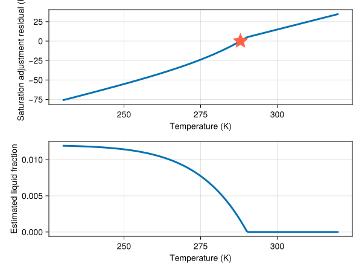
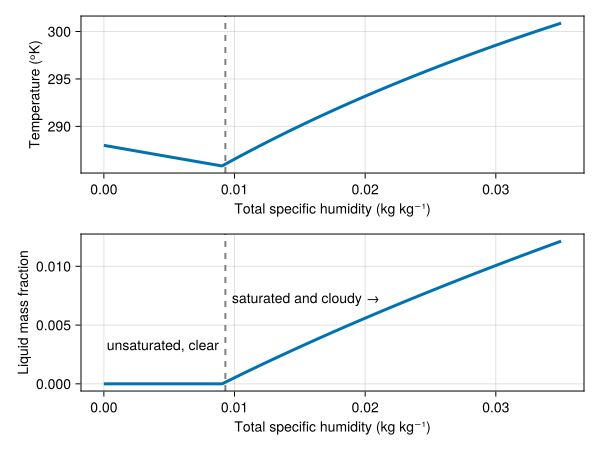
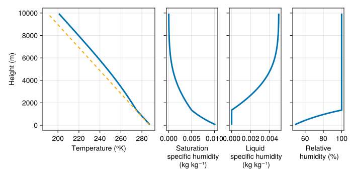

Warm-phase saturation adjustment
Warm-phase saturation adjustment is a model for water droplet nucleation that assumes that water vapor in excess of the saturation specific humidity is instantaneously converted to liquid water. Mixed-phase saturation adjustment is described by Pressel et al. (2015).
Moist static energy and total moisture mass fraction
The saturation adjustment solver (specific to our anelastic formulation) takes four inputs:
- moist static energy $e$,
- total moisture mass fraction $qᵗ$,
- height $z$, and
- reference pressure $pᵣ$.
Note that moist static energy density $ρᵣ e$ and moisture density $ρᵣ qᵗ$ are prognostic variables for AtmosphereModel when using AnelasticFormulation, where $ρᵣ$ is the reference density. With warm-phase microphysics, the moist static energy $e$ is related to temperature $T$, height $z$, and liquid mass fraction $qˡ$ by
\[e ≡ cᵖᵐ \, T + g z - ℒˡᵣ qˡ ,\]
where $cᵖᵐ$ is the mixture heat capacity, $g$ is gravitational acceleration, and $ℒˡᵣ$ is the latent heat at the energy reference temperature.
Equilibrium expressions for moist static energy and saturation specific humidity
Saturation adjustment microphysics assumes that temperature and the moisture mass fractions instantaneously adjust to an equilibrium in which the specific humidity is equal to or less than the saturation specific humidity. This equilibrium condition implies that the liquid mass fraction $qˡ$ is given by
\[qˡ = \max(0, qᵗ - qᵛ⁺)\]
where $qᵗ$ is the total moisture mass fraction, and $qᵛ⁺$ is the saturation specific humidity at the temperature $T$. The saturation specific humidity is defined as
\[qᵛ⁺ = \frac{ρᵛ⁺}{ρ},\]
where $ρᵛ⁺ = pᵛ⁺ / Rᵛ T$ is the density associated with the saturation vapor pressure $pᵛ⁺$ and $Rᵛ$ is the vapor gas constant. Note that the air density $ρ$ itself depends on the specific humidity, since according to the ideal gas law,
\[ρ = \frac{pᵣ}{Rᵐ T} = \frac{pᵣ}{\left (qᵈ Rᵈ + qᵛ Rᵛ \right ) T} ,\]
where $qᵈ = 1 - qᵗ$ is the dry air mass fraction, $qᵛ$ is the specific humidity, $Rᵈ$ is the dry air gas constant, and $Rᵛ$ is the vapor gas constant. The density $ρ$ is expressed in terms of $pᵣ$ under the anelastic approximation.
In saturated conditions, we have $qᵛ ≡ qᵛ⁺$ by definition, which leads to the expression
\[qᵛ⁺ = \frac{ρᵛ⁺}{ρ} = \frac{Rᵐ}{Rᵛ} \frac{pᵛ⁺}{pᵣ} = \frac{Rᵈ}{Rᵛ} \left ( 1 - qᵗ \right ) \frac{pᵛ⁺}{pᵣ} + qᵛ⁺ \frac{pᵛ⁺}{pᵣ} .\]
Rearranging, we find a new expression for the saturation specific humidity which is valid only in saturated conditions and under the assumptions of saturation adjustment,
\[qᵛ⁺ = \frac{Rᵈ}{Rᵛ} \left ( 1 - qᵗ \right ) \frac{pᵛ⁺}{pᵣ - pᵛ⁺} .\]
This expression can also be found in paper by Pressel et al. (2015), equation (37).
The saturation adjustment algorithm
We compute the saturation adjustment temperature by solving the nonlinear algebraic equation
\[0 = r(T) ≡ T - \frac{1}{cᵖᵐ} \left [ e - g z + ℒˡᵣ \max(0, qᵗ - qᵛ⁺) \right ] \,\]
where $r$ is the "residual", using a secant method.
As an example, we consider an air parcel at sea level within a reference state with base pressure of 101325 Pa and a surface temperature $T₀ = 288$ᵒK. We first compute the saturation specific humidity assuming a dry-air density,
using Breeze
using Breeze.Thermodynamics: saturation_specific_humidity
thermo = ThermodynamicConstants()
p = 101325.0
T = 288.0
Rᵈ = Breeze.Thermodynamics.dry_air_gas_constant(thermo)
ρ = p / (Rᵈ * T)
qᵛ⁺₀ = saturation_specific_humidity(T, ρ, thermo, thermo.liquid)0.010359995391195264Next, we compute the saturation specific humidity for moist air with a carefully chosen moist air mass fraction,
using Breeze.Microphysics: adjustment_saturation_specific_humidity, WarmPhaseEquilibrium
qᵗ = 0.012 # [kg kg⁻¹] total specific humidity
qᵛ⁺ = Breeze.Microphysics.adjustment_saturation_specific_humidity(T, p, qᵗ, thermo, WarmPhaseEquilibrium())0.01040909041114332There are two facts of note. First is that we have identified a situation in which $qᵗ > qᵛ⁺$, since $qᵗ = 0.012$ and $qᵛ⁺ = 0.0104$. Second, note that the saturation specific humidity is higher if we assume a saturated state, versus the unsaturated result given by $qᵛ⁺₀$ above. This is because moist air is less dense than dry air, so the denominator $ρ$ is smaller under the assumption of a saturated state.
In equilibrium (and thus under the assumptions of saturation adjustment), the specific humidity is $qᵛ = qᵛ⁺$, while the liquid mass fraction is
qˡ = qᵗ - qᵛ⁺0.0015909095888566802It is small but greater than zero → the typical situation in clouds on Earth. We are now ready to compute moist static energy,
using Breeze.Thermodynamics: MoistureMassFractions
q = MoistureMassFractions(qᵛ⁺, qˡ)
cᵖᵐ = mixture_heat_capacity(q, thermo)
g = thermo.gravitational_acceleration
z = 0.0
ℒˡᵣ = thermo.liquid.reference_latent_heat
e = cᵖᵐ * T + g * z - ℒˡᵣ * qˡ289449.7954526551Moist static energy has units $\mathrm{m^2 / s^2}$, or $\mathrm{J} / \mathrm{kg}$. Next we show that the saturation adjustment solver recovers the input temperature by passing it an "unadjusted" moisture mass fraction into Breeze.AtmosphereModels.compute_temperature,
using Breeze.AtmosphereModels: compute_temperature
microphysics = SaturationAdjustment(equilibrium=WarmPhaseEquilibrium())
q₀ = MoistureMassFractions(qᵗ)
𝒰 = Breeze.Thermodynamics.MoistStaticEnergyState(e, q₀, z, p)
T★ = compute_temperature(𝒰, microphysics, thermo)288.00001887167366Finally, we note that the saturation adjustment solver is initialized with a guess corresponding to the temperature in unsaturated conditions,
cᵖᵐ₁ = mixture_heat_capacity(q₀, thermo)
T₁ = (e - g * z) / cᵖᵐ₁285.13288359502644The difference between $T₁$ and the solution $T_\mathrm{eq}$ is $T_\mathrm{eq} - T₁ = ℒˡᵣ qˡ / cᵖᵐ$ and is therefore strictly positive. In other words, $T₁$ represents a lower bound.
To generate a second guess for the secant solver, we start by estimating the liquid mass fraction using the guess $T = T₁$,
qᵛ⁺₂ = adjustment_saturation_specific_humidity(T₁, p, qᵗ, thermo, WarmPhaseEquilibrium())
qˡ₁ = qᵗ - qᵛ⁺₂0.00338954186544636In general, this represents an overestimate of the liquid mass fraction, because $qᵛ⁺₂$ is underestimated by the too-low temperature $T₁$. We thus increment the first guess by half of the difference implied by the estimate $qˡ₁$,
q₂ = MoistureMassFractions(qᵛ⁺₂, qˡ₁)
cᵖᵐ₂ = mixture_heat_capacity(q₂, thermo)
ΔT = ℒˡᵣ * qˡ₁ / cᵖᵐ₂
T₂ = T₁ + ΔT / 2289.27571174858616The residual looks like
using Breeze.Microphysics: saturation_adjustment_residual
using CairoMakie
equilibrium = WarmPhaseEquilibrium()
T = 230:0.5:320
r = [saturation_adjustment_residual(Tʲ, 𝒰, thermo, equilibrium) for Tʲ in T]
qᵛ⁺ = [adjustment_saturation_specific_humidity(Tʲ, p, qᵗ, thermo, equilibrium) for Tʲ in T]
fig = Figure()
axr = Axis(fig[1, 1], xlabel="Temperature (K)", ylabel="Saturation adjustment residual (K)")
axq = Axis(fig[2, 1], xlabel="Temperature (K)", ylabel="Estimated liquid fraction")
lines!(axr, T, r)
scatter!(axr, 288, 0, marker=:star5, markersize=30, color=:tomato)
lines!(axq, T, max.(0, qᵗ .- qᵛ⁺))
fig
There is a kink at the temperature wherein the estimated liquid mass fraction bottoms out.
Equilibrium states with varying total specific humidity
As a second example, we examine the dependence of temperature on total specific humidity when the moist static energy is held fixed.
using Breeze.Thermodynamics: MoistStaticEnergyState
T₀ = 288
cᵖᵈ = thermo.dry_air.heat_capacity
e₀ = cᵖᵈ * T₀ # representative value
z = 0.0
p = 101325.0
# Vary the total moisture mass fraction:
qᵗ = 0:1e-4:0.035 # [kg kg⁻¹]
T = zeros(length(qᵗ))
qˡ = zeros(length(qᵗ))
for (i, qᵗⁱ) in enumerate(qᵗ)
q = MoistureMassFractions(qᵗⁱ)
𝒰 = MoistStaticEnergyState(e₀, q, z, p)
T[i] = compute_temperature(𝒰, microphysics, thermo)
qᵛ⁺ = Breeze.Microphysics.adjustment_saturation_specific_humidity(T[i], p, qᵗⁱ, thermo, WarmPhaseEquilibrium())
qˡ[i] = max(0, qᵗⁱ - qᵛ⁺)
end
using CairoMakie
# Hard code the transition index here, e.g. 105 (adjust to your needs)
transition_idx = 105
fig = Figure()
axT = Axis(fig[1, 1], xlabel="Total specific humidity (kg kg⁻¹)", ylabel="Temperature (ᵒK)")
axq = Axis(fig[2, 1], xlabel="Total specific humidity (kg kg⁻¹)", ylabel="Liquid mass fraction")
lines!(axT, qᵗ, T)
lines!(axq, qᵗ, qˡ)
idx = searchsortedfirst(qˡ, 1e-4)
vlines!(axT, qᵗ[idx], color=:gray, linestyle=:dash, linewidth=2)
vlines!(axq, qᵗ[idx], color=:gray, linestyle=:dash, linewidth=2)
text!(axq, "unsaturated, clear", position=(qᵗ[idx-5], 4e-3), align=(:right, :top))
text!(axq, "saturated and cloudy →", position=(qᵗ[idx+5], 8e-3), align=(:left, :top))
fig
Saturation adjustment with varying height
For a third example, we consider a state with constant moist static energy and total specific humidity (equivalently, a constant $θ$ in this reference state), but at varying heights:
using Breeze
grid = RectilinearGrid(size=100, z=(0, 1e4), topology=(Flat, Flat, Bounded))
thermo = ThermodynamicConstants()
θ₀ = 288
p₀ = 101325
reference_state = ReferenceState(grid, thermo;
base_pressure = p₀,
potential_temperature = θ₀)
qᵗ = 0.005
q = MoistureMassFractions(qᵗ)
z = znodes(grid, Center())
T = zeros(grid.Nz)
qᵛ⁺ = zeros(grid.Nz)
qˡ = zeros(grid.Nz)
rh = zeros(grid.Nz)
# Set a constant moist static energy referenced to z = 0, clear air
cᵖᵐ = mixture_heat_capacity(q, thermo)
Rᵈ = Breeze.Thermodynamics.dry_air_gas_constant(thermo)
g = thermo.gravitational_acceleration
for k = 1:grid.Nz
pᵣ = reference_state.pressure[1, 1, k]
Tᵣ = θ₀ * (pᵣ / p₀)^(Rᵈ / cᵖᵈ)
e₀ = cᵖᵐ * Tᵣ + g * z[k]
𝒰 = MoistStaticEnergyState(e₀, q, z[k], pᵣ)
T[k] = compute_temperature(𝒰, microphysics, thermo)
# Saturation specific humidity via adjustment formula using T[k], pᵣ, and qᵗ
qᵛ⁺[k] = Breeze.Microphysics.adjustment_saturation_specific_humidity(T[k], pᵣ, qᵗ, thermo, WarmPhaseEquilibrium())
qˡ[k] = max(0, qᵗ - qᵛ⁺[k])
rh[k] = 100 * min(qᵗ, qᵛ⁺[k]) / qᵛ⁺[k]
end
cᵖᵈ = thermo.dry_air.heat_capacity
g = thermo.gravitational_acceleration
fig = Figure(size=(700, 350))
yticks = 0:2e3:10e3
axT = Axis(fig[1, 1:2]; xlabel = "Temperature (ᵒK)", ylabel = "Height (m)", yticks)
axq⁺ = Axis(fig[1, 3]; xlabel = "Saturation\n specific humidity\n (kg kg⁻¹)",
yticks, yticklabelsvisible = false)
axqˡ = Axis(fig[1, 4]; xlabel = "Liquid\n specific humidity\n (kg kg⁻¹)",
yticks, yticklabelsvisible = false)
axrh = Axis(fig[1, 5]; xlabel = "Relative\n humidity (%)",
xticks = 0:20:100,
yticks, yticklabelsvisible = false)
lines!(axT, T, z)
lines!(axT, T[1] .- g * z / cᵖᵈ, z, linestyle = :dash, color = :orange, linewidth = 2)
lines!(axq⁺, qᵛ⁺, z)
lines!(axqˡ, qˡ, z)
lines!(axrh, rh, z)
fig